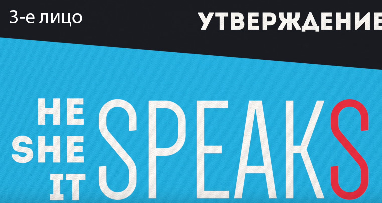
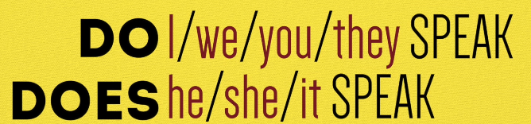
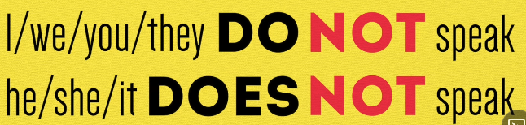
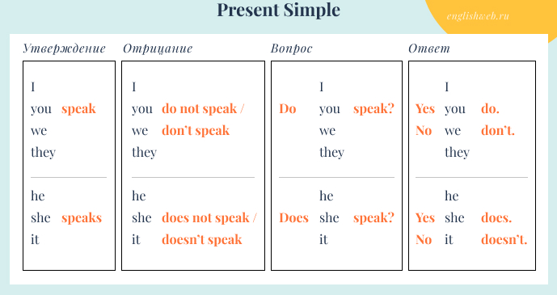

Present

PRESENT SIMPLE (I do)
- Констатируем факты, общеизвестные истины, что-то неизменное, что-то повторяющееся, привычки (
I'm not a student) - Постоянно / регулярно (
The Earth goes around the Sun) - Выражения действия без указания определенного времени (
I love you) (The sky is blue. The plain arives at 7 p.m.) - Расписание событий (
The lesson begins in five minutes) - Marker-words:
Always, never, every day, seldom, regulary, rarely, usually, sometimes and so on.
Формула: Подлежащее + to be(am/are/is)


 
Examples
Nick usually goes to school at 7 o’clock.
What does he or she look?
Do you go? Does she go?
Mary is a great friend.
Mat doesn’t like to cook.
Нет действий
| + | - | ? |
|---|---|---|
| I am(‘m) a student | I am not a student | Am I a student? |
| You/We/They are(‘re) a student(s) | You/We/They are not(aren’t) a student(s) | Are you/we/they a student(s)? |
| He/She/It is(‘s) a student | He/She/It is not(isn’t) a student | Is he/she/it a student? |
Есть действия
| + | - | ? |
|---|---|---|
| I go | I do not(don’t) go | Do I go? |
| You/We/They go | You/We/They do not(don’t) go | Do You/We/They go? |
| He/She/It goes | He/She/It does not(doesn’t) go | Does He/She/It go? |
PRESENT CONTINUOUS (I am doing)
- События, которые происходят прямо сейчас (
I’m driving, that’s why I can’t talk, I’m going to my job, We’re standing in the airport.) - События, которые происходят в настоящем, но не обязательно в данный момент. Около настоящего момента (
I’m working hard on my English to get into university) - События в будущем, которые запланированы. Как правило, это планы, в осуществлении которых человек на сто процентов уверен (
I’m visiting my dentist tomorrow) - События которое происходять снова и снова, жалоба на какие-либо события (
Our kids is watching to much TV) - Marker-words:
Now, right now, at present, at the moment, always, soon
Формула: Подлежащее + to be + V-ing
| + | - | ? |
|---|---|---|
| I am(‘m) going | I am not going | Am I going? |
| You/We/They are(‘re) going | You/We/They are not(aren’t) going | Are you/we/they going? |
| He/She/It is(‘s) going | He/She/It is not(isn’t) going | Is he/she/it going? |
Going to
Going to - present (I am going to do)
| + | - | ? |
|---|---|---|
| I’m going to buy smth | I’m not going to buy smth | Am I going to buy smth? |
Going to - past
| + | - | ? |
|---|---|---|
| I/He/She/It was going to buy smth | I/He/She/It was not(wasn’t) going to buy smth | |
| You/WeThey were going to buy smth | You/We/They were not(wasn’t) going to buy smth |
PRESENT PERFECT (I have done)
Действие, которое произошло в прошлом, но связано с НАСТОЯЩИМ моментом. ПОКАЗЫВАЕТ РЕЗУЛЬТАТ ДЕЙСТВИЯ.
Показывает сам факт результата СЕЙЧАС на какое-либо действвие в ПРОШЛОМ, причем когда именно в прошлом это произошло неважно.
I have lost my book(Я потерял свою книгу, она мне сейчас нужна, но я её потерял)I can't find my earphones, somebody has taken itKate is having a party tonight, she has invited a lot of people
Present Perfect (Present Perfect Simple) – настоящее совершенное время. Ему нет соответствий в русском языке. Нам может быть трудно понять Present Perfect, потому что �англоговорящие люди иначе воспринимают понятие времени. С точки зрения русского языка действие в настоящем времени не может закончиться, на то оно и настоящее. Если действие завершилось (прошло), значит, время должно быть прошедшее. Английский язык придерживается другой логики: в нем действие в настоящем может закончиться, и пример этому – Present Perfect.
- Повторяющиеся действия (
I have been in France 3 times) - События, которые никогда не происходили (
She has never been in England) - События, которые продолжаются продолжительное время до настоящего момента, описание опыта, исследования, достижения
I have spoken English 5 years,Suzanne has had a baby - Marker-words:
1 time, 2 times, …, already, just, never, still
Отличие от Past Simple
I have lived in England for 5 years (До сих пор живу)I lived in England for 5 years (Past Simple, уже не живу)
Формула: Подлежащее + have/has + глагол в 3 форме или + ed
| + | - | ? |
|---|---|---|
| I/You/We/They have done this work | I/You/We/They have not(haven’t) done this work | Have I/You/We/They done this work? |
| He/She/It has done this work | He/She/It has not(hasn’t) done this work | Has He/She/It done this work? |
PRESENT PERFECT CONTINUOUS (I have been doing)
- Когда дейсвие уже закончилоь, но результат от этого действия еще виден
Oh, the kitchen is a mess! Who has been coocking?You look sweaty! Have you been working out?I look tired, because I have been learning my home tasks.The ground is wet. It has been reaining.
- Когда действие началось в прошлом, продолжалось какое-то время и продолжается до настоящего времени или закончилось непоредственно недалеко от настоящего. Когда указана какая-либо ДЛИТЕЛЬНОСТЬ процесса.
I’ve been learning Spanish for 5 years and I still don’t know it very much.I’ve been waiting for him for 30 minutes.
- Marker-words:
For, For 30 minutes, For 5 years, Since, Since morning, Lately, Recently, All week - Формула:
Подлежащее (Subject) + have/has been + V-ing
Отличие от Present Perfect
My hands are very dirty. I have been reparing my bike.- дейстие уже закончено, я починил велосипед, но еще виден результат от этого действия - грязные рукиMy bike is ok now. I have reparied it.(Present Perfect, Дейстие уже закончено, я починил велосипед)
| + | - | ? |
|---|---|---|
| I/You/We/They have(‘ve) been learning | I/You/We/They have not (haven’t) been learning | Have I/You/We/They been learning? |
| He/She/It has been learning | He/She/It has not (hasn’t) been learning | Has He/She/It been learning? |